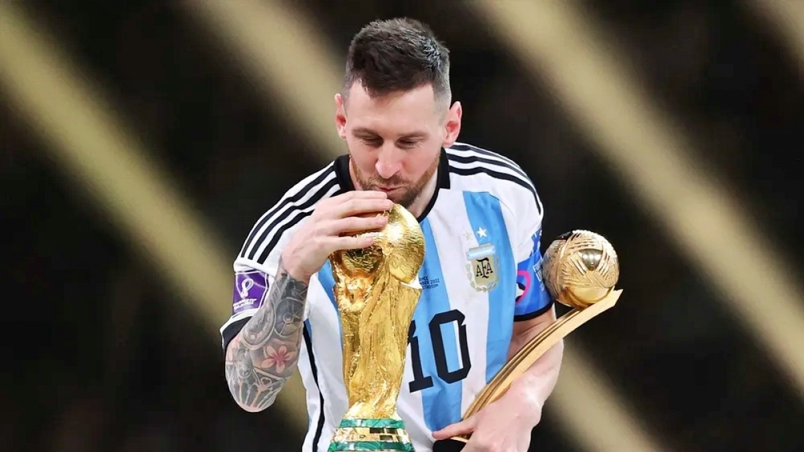
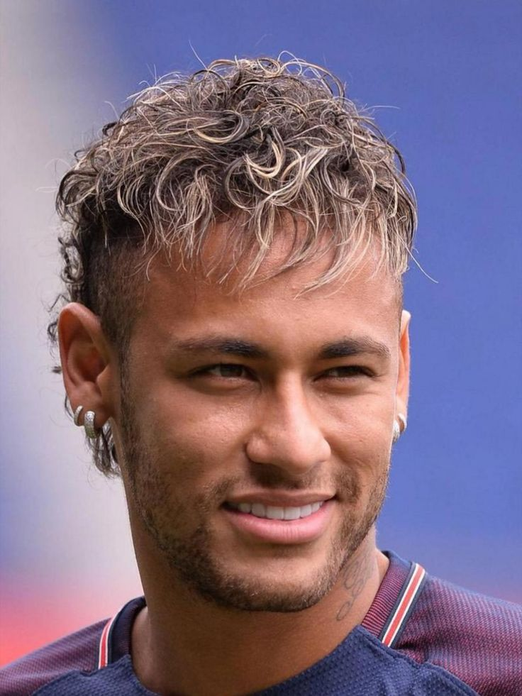

Messi có phải là GOAT bóng đá thế giới?

Câu hỏi “Messi có phải là GOAT (Greatest of All Time) của bóng đá thế
giới?” luôn khiến người hâm mộ tranh luận sôi nổi. Với hơn 20 năm gắn
bó với trái bóng, Messi đã để lại dấu ấn khó phai qua hàng loạt danh
hiệu cá nhân lẫn tập thể, cùng những pha bóng tinh tế, đẹp mắt khiến
mọi người say mê. Anh không chỉ là một cầu thủ xuất sắc mà còn là minh
chứng sống cho tài năng thiên bẩm, đam mê cháy bỏng và sự kiên trì bền
bỉ trong suốt sự nghiệp.
Điều gì khiến Messi trở nên đặc biệt?
Không chỉ là những danh hiệu đồ sộ, mà còn là cách anh chơi bóng.
Messi khiến mọi động tác trở nên nhẹ nhàng, tự nhiên, như thể trái
bóng dính chặt vào chân mình. Những pha rê dắt, những đường chuyền,
những cú sút của anh đều toát lên vẻ tinh tế và sáng tạo không
ngừng. Và đỉnh cao phải kể đến chức vô địch FIFA World Cup cùng đội
tuyển Argentina, danh hiệu đã hoàn thiện sự nghiệp vĩ đại của anh,
khẳng định Messi không chỉ là ngôi sao của CLB mà còn là huyền thoại
của bóng đá thế giới.
Thiên tài là khi làm những điều phi thường một cách đơn giản.
Danh hiệu và khoảnh khắc cảm xúc
Messi là hiện thân của sự kiên trì, tài năng và đam mê trong bóng
đá. Trong hơn 20 năm sự nghiệp, anh đã giành 8 Quả bóng Vàng, cùng
vô số chức vô địch La Liga và UEFA Champions League với Barcelona,
đồng thời tỏa sáng rực rỡ cùng Argentina, đỉnh cao là World Cup
2022, nơi anh nâng cúp trong niềm vui vỡ òa sau nhiều năm chờ đợi.
Mỗi bàn thắng đẹp mắt, pha rê bóng điệu nghệ qua hàng thủ hay cú sút
quyết định đều trở thành khoảnh khắc để đời, khiến người hâm mộ trên
toàn thế giới không thể quên. Giây phút Messi bật khóc nâng cúp
World Cup không chỉ là chiến thắng cá nhân mà còn là minh chứng cho
niềm kiên trì, lòng đam mê và thiên tài, biến anh trở thành biểu
tượng cảm hứng bất tận, không chỉ cho các cầu thủ trẻ mà còn cho tất
cả những ai yêu bóng đá.
